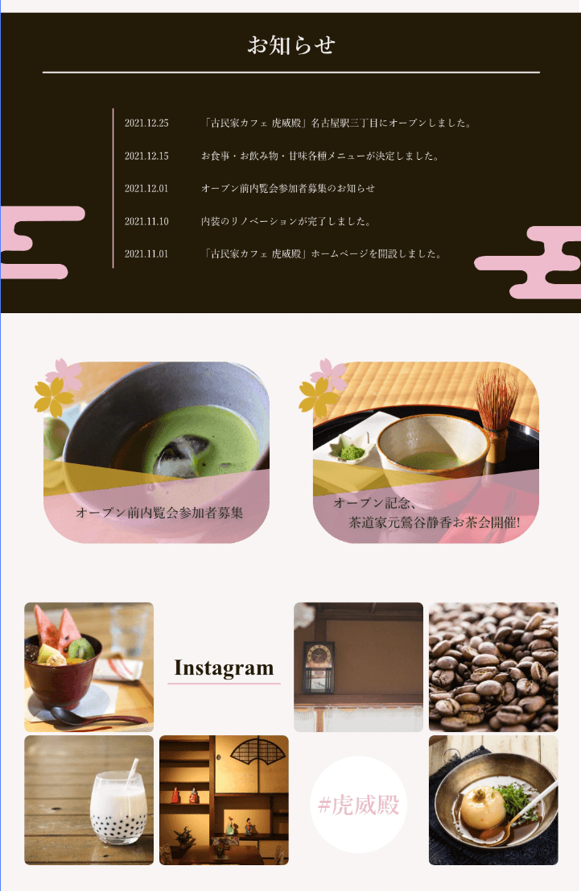
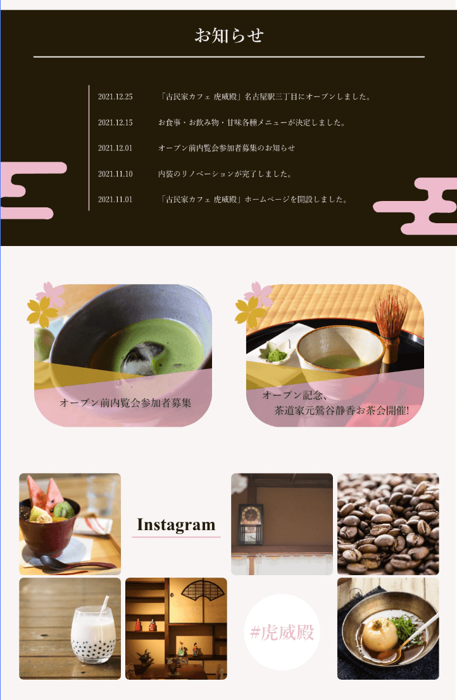

お天気アプリ
作成期間
約15時間
使用技術
HTML+CSS
JavaScript
作品について

気象庁の天気予報APIを利用して作ったお天気アプリです。３日間の詳しい天気と今日の降水率、一週間の天気を取得して表示しています。また天気コードを取得することで、天気によって背景画像などが変わります。
デザイン


 


天気コード（晴れ100番台、曇り200番台、雨300番台、雪400番台）によってヘッダーや背景の色が変わるようになっています。晴れの日には空の画像とオレンジ色の背景、雨の日は雨のヘッダーと水色の背景になるなど、天気毎に変わるよう設定してあります。
動画
youtubeはIframeで流すようにしていて、天候に合わせて流す曲をランダムに変えています。YouTubeのIDを天候ごとに分けた配列に入れています。天候コードに対応した配列を４つ用意してあり、対応する配列から、ランダムでIDを選びます。そのIDをIframeに代入して、動画を再生できるようにしています。
猫
雨や雪の日は気分が沈みがちになると思うので、元気が出るように、ランダムに猫の画像がでるボタンがあります。晴れの日と曇りの日は「猫がいません」と出て、押しても反応しませんが、雨と雪の日は「猫がいます」と表示され押すことができます。画像はCatAPIから取得しています。
TOP